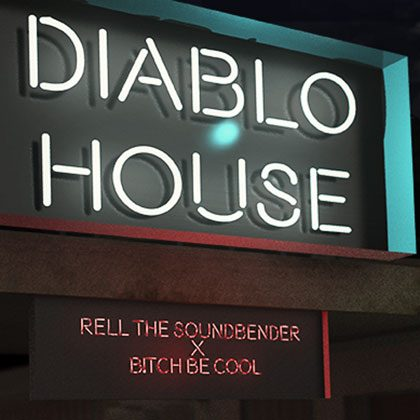

Rell the Soundbender Unveils Gritty Bass House Single “Diablo House” on Insomniac Records


Hailing from Panama and now an L.A. native, the man known as Rell the Soundbender brings a number of different musical worlds together. His career in production began firmly in hip-hop, as a gun for hire who provided the beats for the likes of Flo Rida and Lloyd Banks. Eventually, though, the wider possibilities of the dancefloor and electronic music came calling.
While there is still a straight line pointing back to hip-hop in all of his work, he’s proved himself a pro the past few years at next-generation fusion sounds like trap and moombahton. And now, with his new “Diablo House” single that’s just dropped on Insomniac Records, he’s unveiled a grittier bass house sound, which is part of his forthcoming Diablo EP that’s due next month.
“This new EP is a small collection of different things that I love to make, and I got to make it with some really good friends of mine,” Rell says of the collaboration-heavy effort. “I can’t think of anything cooler than to be able to release it on Insomniac.”
To celebrate the release of “Diablo House” and its accompanying Diablo EP, we decided to track down Rell the Soundbender for a chat. We discovered a man coasting on a fresh energy.
You’ve had an interesting career, indeed, with such a strong history in hip-hop, trap and beyond. Give us a rundown of the different kinds of music you’re involved with creating.
Yeah, def. I started in the hip-hop and pop field, which gave me a strong foundation. But I’ve always been the type to listen to anything and everything. I grew up in many different regions that have influenced my sound, from Virginia to Florida to Panama, and now I’m in the West, so it’s a mixture of everything over the years. I was always the kid buying the $1 CDs at Eckerd from different countries, and I’d take it home and listen to all the sounds.
Was there a point when your involvement with hip-hop transitioned into more straight-up dancefloor-focused music?
Yep, in 2012, I made the solid decision to switch over and focus more on that. The freedom to explore and do whatever the hell you wanted is what drew me in. I was tired of everyone asking for something that sounded like everybody else. Now the two worlds are merging, and that’s exciting. I’ve got a few moves up my sleeve.
Is there a big difference between serving as a producer for other artists and producing music that you release under your own name?
Yes, there is. My main issue is dialing it in and making sure I don’t go too far “left” when producing a song for an artist. I like to experiment and try new things that most probably wouldn’t try to do. Sometimes, not everyone can see that vision, but I think I’m getting better at balancing the two out and presenting that vision in a way for everyone to clearly see.
“Diablo House” has a very different vibe from your other recent music. What inspired you to move in this direction, and what can we expect from the full EP in November?
Yeah, it’s something different from me, release-wise, but nothing new creatively. I played the demo that I had written a few weeks prior for Richard [B!tch Be Cool] when he first moved out to California back in July, and we literally just lifted it and reproduced it. He’s one of my best friends going back about seven years now, so it’s a cool little song we decided to work on as the paint dried in the new spot!
As far as the full EP goes, I got to work with my friends for some other collaborations, including etc!etc!, DJ Sliink, Rawtek, and more. It’s full of energy, and each track brings a different vibe to the picture, which is what makes it so dope. It’s like a goodie bag full of different treats… see what I did there? Because, ya know—Halloween.
Follow Rell the Soundbender on Facebook | Twitter | SoundCloud
Follow Insomniac Records on Facebook | Twitter | SoundCloud